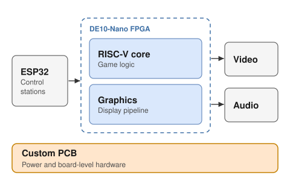

01 · Senior design · Hardware lead · Featured
RetroCore controller link
Wireless ESP32 controllers, an ESP32 hub and a 1 MHz SPI link into an FPGA game console. I traced the dropouts to three root causes, wrote 24 testable requirements, and designed the add-on PCB.
Open project →